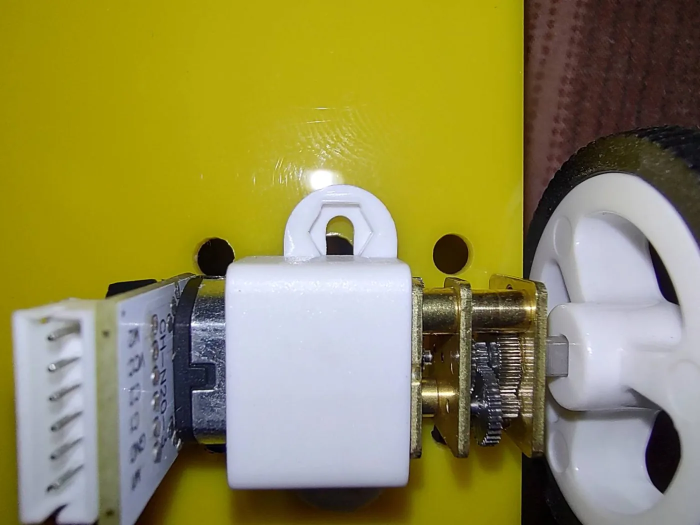

Overview
I’m building a differential-drive robot that I can keep developing as I learn more about embedded control, ROS 2 navigation and cloud robotics. The same platform will eventually support encoder odometry, sensor integration, autonomous driving and remote monitoring.
My first job has been sorting out the mechanics. I’ve dry-fitted the two acrylic plates, checked how the N20 motors and wheels sit against the chassis, and looked at the ground clearance. I need to finish the mounting arrangement before I can start wiring and motor tests.
What I have checked so far
- Laid out the actual blue and yellow acrylic chassis plates and compared the hole patterns and available mounting space.
- Dry-fitted the N20 motor, bracket and wheel to understand mounting alignment and wheel clearance.
- Held the two plates in a stacked arrangement and checked the side clearance and approximate layout.
- Inspected ground clearance and the position of the wheel/underside hardware before committing to mounting locations.
- Identified an alignment issue around the caster mounting holes. The caster position and permanent fixing method are not finalized.
The rolling chassis is not assembled yet. I’ll record the final clearance measurements after the motor and caster mounts are fixed.
Photos from the actual build
Photos from the first dry-fit session. I’m still adjusting the layout and mounting positions.



Hardware and system plan
The intended controller is an ESP32-WROOM-32 running micro-ROS firmware, with ROS 2 Jazzy on the host computer. The drive system uses two N20 geared motors with encoders and a TB6612FNG driver. Sensor plans include an MPU-6050 IMU, front time-of-flight ranging, rear ultrasonic ranging and servo-mounted sensing. The available parts also include two LM2596 buck converters, a 2S 7.4 V battery, a fuse, a rocker switch and an emergency-stop switch.
I’m planning to keep the drivetrain and battery low, with the controller and sensors on the upper deck. I’ll settle the exact positions after checking the clearances, wiring routes and access to the switches.
I’ve already run a standalone micro-ROS publisher on the ESP32 and received its messages in ROS 2 through the serial agent. The next step is to connect that software work to the robot hardware.
Engineering decisions in progress
- Mounting: Find a secure motor and caster arrangement without forcing misaligned acrylic holes.
- Clearance and balance: Check wheel contact, caster height, underside clearance and the battery’s effect on weight distribution.
- Power: Measure and verify regulated rails before connecting the ESP32, motor driver or sensors. Include fuse and emergency-stop behavior in the checks.
- Signals: Confirm encoder output levels and sensor logic-voltage requirements before connecting them to ESP32 GPIO.
- Software: Keep low-level motor and sensing firmware separate from later ROS 2 odometry, localization and navigation work.
Intended system architecture
My plan is to handle motor and sensor inputs on the ESP32, then send data to a ROS 2 Jazzy computer for odometry, diagnostics and navigation. Cloud connectivity comes after the core robot is running.
Planned integration path
N20 motors + encoders / IMU / range sensors
↓
ESP32 firmware + TB6612FNG motor driver
↓ micro-ROS Agent / serial interface
ROS 2 Jazzy host: /cmd_vel, odometry, TF, diagnostics
↓
Future: state estimation, navigation and SLAM
↓
Future cloud robotics: telemetry, remote missions,
health monitoring and multi-robot workflows
I’ll add firmware, wiring diagrams and test results as the build progresses. A Raspberry Pi, scanning LiDAR and camera are possible later additions.
Next steps
- Resolve motor-bracket and caster mounting, then complete a stable rolling chassis and record measured clearances.
- Securely position the battery and electronics, then check the power path, polarity, fuse and regulator outputs with a multimeter.
- Bring up the TB6612FNG and both motors with the wheels off the ground; verify direction and emergency-stop behavior.
- Read the two motor encoders and calibrate wheel direction, ticks per revolution and basic wheel odometry.
- Bring up the IMU and distance sensors individually, then integrate them with the ESP32 and micro-ROS.
- Publish robot state to ROS 2, validate odometry and TF, and only then work toward closed-loop control and autonomous navigation.
Each step will be documented with photos, configuration, measurements and test results once it has actually been completed.
Component inventory
The PDF lists the parts I recorded in November 2026, with quantities and suppliers. It’s the reference I’m using to plan the build. It is a procurement record, not a claim that every component is already installed or validated.